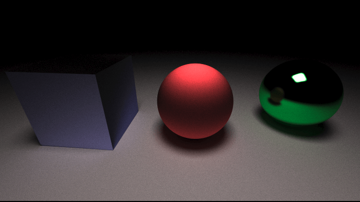

![]()
Simulating Light
As a learning exercise I went through Peter Shirley's Ray Tracing in One Weekend. I'm always impressed that computer graphics can be done is such few lines of code when you don't need to worry about processing speed. In this post I hope to go over a few things I learned.
I love that the problem is just big enough where you need to start breaking things apart to keep the program manageable leaving many choices for such a relatively small program, but you have the option to extend it as far as you want. Also I just enjoy the output of the result. It is so satisfying to see an image generated just from code. To see what your collision detection are used for. To see what the matrix maps transformed into something that looks cool.
This is actually the 3rd ray tracer I've written. The 1st one I wrote was in Python, that was too slow, the 2nd was with Python with Numpy, it was faster but with some confusing linear maps and the third is Rust. In this post I hope to tell you things I've learned and hopefully you'll try writing your own light simulator.
Python
Python is an awesome language I use everyday in a variety of tasks and most of the time the speed of the language is not the bottleneck. Python became the bottleneck even after optimizing as much as I could without reverting to C calls. I knew I was fighting an uphill battle and without large algorithm improvements I couldn't squeeze any more out of it without changing the base datatype.
Numpy
Numpy is python library which stores and operates on highly optimized multi-dimensional arrays. This combined with linear functions makes it very fast. Using the CPU's linear accelerators such as BLAS and LAPACK. In the future I wish to try against with GPU, there doesn't seem to be much support outside of the CUDA API.
Writing linear maps was a difficult but good learning experience. Some things I learned but might only apply to this narrow case
- Index masks are faster than boolean masks
- Vectorization is key but can make things confusing. This was the first time I heard of the Einstein summation notation "np.einsum('ij, ij->i', m, directions)"
- 32-bit float was the fastest, 64-bit float was slower, 16-bit float slowest
And the results looked okay:

Rust
I wanted to rewrite it in a faster language. I have started working it in Rust.
Taking 5,000 rays per pixel I created this image in 12 minutes. I also learned a lot about Rust structure and writing it effectively. Here is the build up looks like

219 ms - 1 ray per pixel - 275,800 rays

1 s - 7 rays per pixel - 1,930,600 rays

10 s - 85 rays per pixel - 23,443,000 rays

116s - 1000 rays per pixel - 275,800,000 rays
1124s (18.7 mins) - 10,000 rays per pixel - 2,758,000,000 rays
Writing these ray tracers made me realize why ray tracing isn't the default compared to rasterized rendering even though it could look better and easier to program. There is such a large speed boost when using rasterized rendering that you can have more complex scenes. Computers are fast for doing numerical operations but also the world is full of unfathomably large numbers too. A 100W light bulb would output 10^20 photons (assume 100% efficient, 600 nm light). The latest graphics card can achieve around 10^13 floating operations per second, which is crazy fast, but still 7 orders of magnitude off for each photon to have 1 operation per second. There are many things that can be done to speed it up and we don't need to simulate all of them.
I'm excited to continue learning more about ray tracers and things like:
- GPU acceleration
- Neural network denoising
- Optimized collision detection (ex. AABB)
- Improved sampling methods (ex. PDFs)
https://raytracing.github.io/books/RayTracingInOneWeekend.html
https://www.scratchapixel.com/
https://bheisler.github.io/post/writing-raytracer-in-rust-part-1/